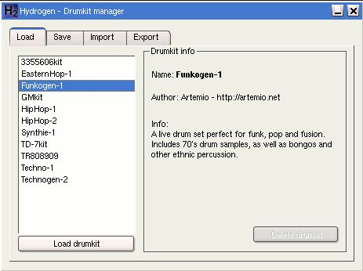
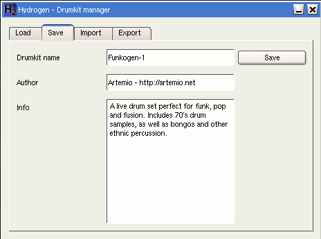

Chapter 2. GUI
2.1. Song-Editor
Im Fenster "Song Editor" befindet sich der zu Erstellende Song. Es enthält die fünf Knöpfe:
Ein neues Pattern erstellen (nach den Namen wird gefragt).
Das ausgewählte Pattern absenken.
Das ausgewählte Pattern anheben.
Ruft ein Menü auf, zur Änderung von Daten den Song betreffend (Name, Author, Kommentare) und zum Löschen der Pattern-Sequenz oder allen erstellten Patterns.
Den gesamten Song abspielen
Unter den Knöpfen befindet sich die Liste mit den erstellten Patterns. In ihr wird festgelegt wann ein Pattern in der Sequenz vorkommt. Über einem Klick mit der linken Maustaste wird das Pattern an- oder abgewählt. Die Auswahl wird über ein "X" angezeigt. Ein Klick mit der rechnten Maustaste auf den Namen eines Patterns, öffnet ein Menü zum Kopieren, Löschen des Patterns oder Änderung des Namens.
Die Auswahl von "pattern properties" ändert den Namen. Jedoch können zwei verschiedene Patterns nicht den gleiche Namen haben.
2.2. Pattern-Editor
Das Fenster "pattern Editor" ermöglicht das erstellen und ändern des Patterns welches gerade abgespielt wird. Man kann Noten hinzufügen oder entfernen und die Intensität jeder einzelnen abstimmen (laut oder leise). Die Combobox "Grid Resolution" legt die Gitterauflösung fest und hilft so beim hinzufügen der Noten. Mögliche Einstellungen für das Gitter liegen bei 4, 8, 16, 32 und 64 Schlägen. Bei der Auswahl eines Instruments (gesamte Spalte) erscheinen im unterem Teil ein paar vertikale Balken, an denen, dann die Intensität der einzelnen Noten eingestellt werden kann. Der Knopf (hear new notes) legt fest ob die Noten beim Neuhinzugefügen gleich abgespielt werden sollen.

2.3. Das Mischpult (Mixer)
Das Fenster "Mixer" erlaubt es Anpassungen bei der Lautstärke von jedem Instrument
des aktuellen Drumkits vorzunehmen. Es werden diverse Informationen, wie die aktuellen
Tonamplitude und die Maximalspitze angezeigt. Man kann die Attribute Balance
 , Lautstärke, Solo
(ein Instrument, alle anderen sind auf Mute)
,
Mute
ändern,
das Sample für ein Instrument laden
oder einfach nur ein Instrument anspielen
.
, Lautstärke, Solo
(ein Instrument, alle anderen sind auf Mute)
,
Mute
ändern,
das Sample für ein Instrument laden
oder einfach nur ein Instrument anspielen
.
Ein Doppelklick auf den Namen eines Instrumentes im "Mixer"-Fenster öffnet einen Dialog zum Ändern der Einstellungen.
2.4. Menü
Aus den Pull-Down-Menüs sind folgende Punkte zu betonen: "save as" speichert den aktuellen Song im .h2song-Format, "Export" exportiert den aktuellen Song als WAV, Preferences, Audio Engine Info, Drumkit Manager,
2.4.1. Preferences-Dialog
Dieser Dialog (File -> Preferences) ermöglicht es den zu verwendenden Audiotreiber auszuwählen und Einstellungen wie Samplingrate, Puffergröße, Metronom (an/aus) sowie dessen Lautstärke vorzunehmen.

Die Registerkarte "Midi System" enthält die Einstellung zum verwendetem MIDI-Kanal. Man hat die Wahl zwischen einem bestimmten (1-16) oder allen (all).

Unter "Appearance" kann man die Schriftart und Schriftgröße, den Fenstertyp (Programm mit "Child" oder "Top Level"-Fenstern starten) und die Fallgeschwindigkeit der Peaks am Mischpult festlegen.

2.4.2. Audio Engine Info
Der Menüpunkt (Window -> Audio Engine Info) öffnet ein Fenster, welches die Hauptinformationen über Hydrogen und den verwendeten Audiotreiber liefert. Puffer und Samplingrate des "jack audio river" sind veränderbar, wenn der Server von der Shell aus gestartet wurde.

2.4.3. Drumkit Manager
Über das Menü (Window -> show drumkit manager) öffnet man das Fenster des Drumkitmanagers. Es steuert alle Einstellungen, die die Drumkits betreffen. Wie z. B. das Binden der Samples (.wav) an die verfügbaren Spuren, um den "Groove" der Zielsituation anzupassen (Discomusik, Rock, Hiphop, etc.). Um eine grobe Vorstellung über die verwendung der einzelnen Drumkits zu erhalten, ist es ratsam sich die .h2song-Demo-Dateien anzuhören.
Auf der ersten Registerkarte erhält man die installierten Drumkits aufgelistet. Man kann Drumkits aus der Liste laden, sich rechts daneben eine Kurzbeschreibung durchlesen und bei Bedarf auch die nicht mehr benötigten Drumkits löschen.

Hier ist es möglich das aktuell verwendete Drumkit mit einer Kurzbeschreibung abzuspeichern.

Hier kann man ein Drumkit importieren (.h2drumkit) ...

... und hier exportieren.